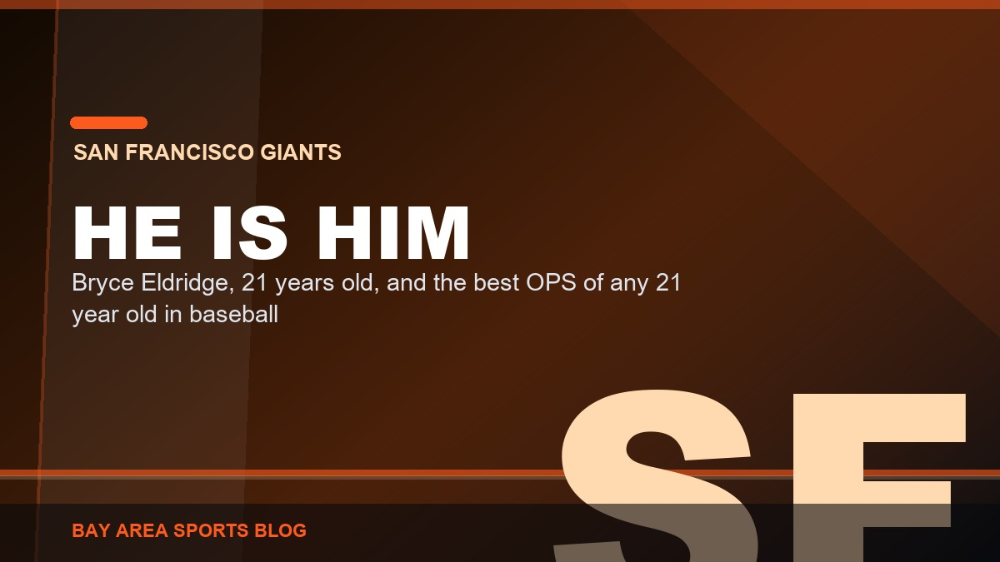

Bay Area Sports Blog: 49ers, Giants, Athletics, Warriors and Sharks

Tony Vitello Has No Idea What He Is Doing With This Lineup, and Bryce Eldridge Batting Leadoff Is the Proof
Sixty different batting orders in seventy-seven games. Eight different leadoff hitters. And now the 21-year-old middle-of-the-order bat is hitting first. This is why they never get in a groove.
The Rundown
Five thingsGiantsBryce Eldridge Is Him, and I'm Done Being Careful About Saying It
Bay AreaThe Bay Bridge Series: What Is Left of It, and What the Record Actually Says
A'sJack Perkins Threw Six and Two Thirds Scoreless and They Lost Anyway
49ersThey Sent Stribling Back Out on a Sprained Ankle. Fire the Training Staff.
49ersThirteen and a Half Over Miami and I Hate Every Half Point of It
Latest Stories

Bryce Eldridge Is Him, and I'm Done Being Careful About Saying It
A two run homer in the first and a double in the eighth in a 10 to 3 win at St. Louis. He is 21, he is hitting .327 over his last 30 games, and he has the best OPS of any 21 year old in baseball.

The Bay Bridge Series: What Is Left of It, and What the Record Actually Says
The complete Giants against Athletics record, season by season since interleague play began in 1997, plus the 1989 World Series, the four ballparks, and what happens to the series now that the A's play in Sacramento.

Jack Perkins Threw Six and Two Thirds Scoreless and They Lost Anyway
Rays 2, A's 1 on a walk off. Perkins struck out eight and gave up nothing, the lineup managed four hits, and Kurtz, Rooker and Jacob Wilson are all on the 60 day list.

They Sent Stribling Back Out on a Sprained Ankle. Fire the Training Staff.
The medical staff looked at Stribling's ankle for a few minutes and sent him back in. Now he's out a month, and Purdy and Pearsall already showed us this movie.

Thirteen and a Half Over Miami and I Hate Every Half Point of It
The 49ers got ten days after Melbourne to get ready for the Dolphins at Levi's. Stribling is out a month, Tonges' knee is a worry, and a 13.5 point line has me nervous.

Raiders 27, Dolphins 13: Jeanty Twice, Paye Everywhere
Raiders 27, Dolphins 13: Ashton Jeanty scored twice, Kwity Paye had two sacks, and Kirk Cousins nearly gave it away with two picks in Week 1.

The Padres Came Into Our Ballpark and Took All Three
Padres 6, Giants 4 finished a three game sweep at Oracle Park. Devers hit 36 and 37, Logan Webb gave up six on Sunday, and San Diego has won seven straight.

Two Walk Offs, One 19 to 1 Beating, and I Watched Every Inning
A's 8, Mariners 7 on a Lawrence Butler two run walk off homer. Donovan Walton won Friday in ten, and Saturday's 19 to 1 had Carlos Cortes pitching.

The Giants Are 62 and 86, and Rafael Devers Has 36 Homers Nobody Mentioned
Two weeks left, 28 and a half back, and the only things worth watching are Devers finishing a season nobody saw and Bryce Eldridge hitting like a hitter.

The A's Lost Their Whole Middle of the Order and Got Hot Anyway
Kurtz and Rooker on the 60 day, Langeliers and Soderstrom on the 10 day, the 29th ranked ERA in baseball, and seven wins in the last ten games.

Niners Injuries From Melbourne: Stribling's Ankle, Tonges' MCL
27 to 7 over the Rams and two guys came off hurt. Stribling's Achilles is intact and it's the ankle. Tonges did his MCL and Shanahan said it wasn't good.

49ers at Rams in Melbourne: The Line Is 3.5 and Our Line Is Half Gone
Week 1 at the Melbourne Cricket Ground, 5:35 Pacific on Netflix. Four defensive linemen are out, the Rams scored 518 points last year, and nobody is at home.

49ers 27, Rams 7: I Think We Just Watched the Best Team in Football
Purdy threw a pick and then threw three touchdowns, the defense stuffed a sneak on fourth and goal from the one, and 100,021 people in Melbourne watched us bury the Rams.

The Bullpen Gave It Back Twice and Devers and Eldridge Won It Anyway
Giants 5, Cardinals 4 in eleven innings at Oracle Park. Logan Webb went six, the ninth got away again, and Shay Whitcomb walked it off after Devers and Eldridge kept dragging us back.

Two Swings and Landen Roupp Was All We Needed
Giants 2, Cardinals 1 at Oracle Park. Bryce Eldridge and Christian Koss went deep in back to back innings, Landen Roupp threw six shutout innings on two hits, and the ninth got scary anyway.

Jeff McNeil Hit a Ground Ball Sixty Feet and We Beat the Blue Jays
A's 6, Blue Jays 5 at Sutter Health Park. Henry Bolte reached four times, Dylan Cease got beat up, Andres Gimenez tied it in the ninth and Jeff McNeil ended it with the bases loaded.

Three Solo Homers Was the Whole Night and Toronto Took the Series
Blue Jays 4, Athletics 2 in 92 degree heat at Sutter Health Park. Kazuma Okamoto hit his thirtieth, and three solo homers were the only offense the A's had.

Alfred Collins Tore His Patellar Tendon and His Season Is Over
Alfred Collins tore his patellar tendon at Tuesday's practice in Melbourne and is out for the season, two days before the opener against the Rams.

The Quiet Part About the Yorks Is Getting Loud Around the League
League people are talking openly about 49ers ownership, the York family and a front office that lost its most important operator.

Cesar Perdomo Gave Us Six Shutout Innings and the Eighth Took It Away
Mets 4, Giants 2 at Citi Field. Six scoreless from a kid in his second big league appearance, Jung Hoo Lee's two run single, and then two homers off Carson Seymour in the eighth.

One Hit in Seattle, and Gage Jump Deserved a Lot Better Than That
Mariners 2, Athletics 0 at T-Mobile Park. Bryan Woo went eight on a Henry Bolte single, Gage Jump struck out seven in four and took the loss, and nobody got past first base.

Rafael Devers Is Carrying a 58 Win Team on His Back
Giants 9, Mets 5, six home runs at Citi Field. Devers hit two more and is batting .420 with 9 homers and 21 RBI since 24 August.

Niners Landed in Melbourne and I Don't Know What Day It Is
The 49ers landed in Melbourne after a 15 hour charter and a 17 hour time difference, nine days before the Week 1 opener against the Rams at the MCG.

Two Hits. The Giants Got Two Hits in Pittsburgh and I Watched Every Pitch
Pirates 5, Giants 2. Blade Tidwell walked five, six Pittsburgh arms combined on a two hitter, and the season is functionally over at 58 and 83.

Bosa Practiced, Every Name You Know Was Out There, and the Plane Leaves Tonight
Final practice before the flight to Melbourne and the head count finally came back whole. Bosa in team periods for the first time in a month, Kittle a third straight day, Evans in uniform, Juszczyk back.

Kittle Practiced. Bosa Didn't. Melbourne Is Nine Days Away.
George Kittle practiced and Nick Bosa did not, with both due out all three days. Mike Evans caught passes out of uniform and Puni cleared protocol.

Rafael Devers Hit Number 30 in the First Inning in Atlanta and I Would Like Some Apologies
Only the second Giant to reach 30 homers since Bonds in 2004, on a 57 win team, after a summer of being told he was soft and not a winning player.

Giants 7, Braves 3, and I Am Not Going to Pretend I Did Not Enjoy That
Anthony Molina goes five without a walk, the bullpen throws four scoreless, and a four run sixth buries Atlanta. Five wins in the last eight.

The A's Have Five Hitters on the IL and deGrom Just Made the Leftovers Look Like a Rehab Start
Rangers 8, Athletics 1. One hit over seven innings against deGrom, a fourth straight loss, and Kurtz, Langeliers, Soderstrom, Wilson and Rooker are all hurt at once.

Bryce Eldridge Went 4 for 5 With 4 RBI and Suddenly the Giants Are Fun Again
Giants 7, Diamondbacks 2 in the nightcap and the doubleheader gets split. Four hits, four driven in, and the first Giants rookie since Buster Posey in 2010 to do it.

They Ran Ron Wotus at the Lineup Card. The Game Hadn't Started Yet.
Ron Wotus got ejected during the lineup card exchange before Game 1 of the doubleheader against Arizona. Not in the third. Not in the ninth. Before the first pitch.

Vitello Got Run Again, and This Time He Took Logan Webb With Him
Third inning, down four, and Tony Vitello got run for the fifth time this season. Jim Wolf threw Logan Webb out with him. Two days after the six run ninth, he did it again.

Bryce Eldridge Is Back, and Buddy Kennedy Is the One Who Paid for It
Eldridge came off the bereavement list Thursday and the Giants designated Buddy Kennedy for assignment to make room. Fourteen homers and a .346 on base at twenty one. Thirty games left and he is the only reason to watch.

49ers 18, Raiders 12: A Kicker Won a Football Game
49ers 18, Raiders 12 in the preseason finale. Eddy Pineiro went 6 for 6 including a 59 yarder and the defense didn't allow a touchdown.

Vitello Got Run in the First Inning on a Check Swing, and I Am Not Even Mad
Tony Vitello got tossed in the top of the first on Wednesday for yelling get it right at a check swing call on Eugenio Suarez. Fourth ejection of his rookie year as a manager, and honestly, good.

Devers Hit His 29th Homer Today and Nobody Said a Word About It
Three straight games with a home run, 29 on the year, and he leads this club in homers and RBI by a mile. Then somebody tells me he isn't a winning player.

Bryce Eldridge Is on the Bereavement List. Take the Week, Kid.
The Giants put Bryce Eldridge on the bereavement list on Monday. Nobody's said why and nobody has to. He'll be away about a week, and every other thing about this season can wait.

They Blew a Six Run Lead in the Ninth and the Game Isn't Even Over
Nine to three going to the ninth, then Eugenio Suarez hit a grand slam. The same Suarez the manager got himself ejected screaming about in the first inning. I'm done being polite about this season.

Fire Tony Vitello. The Way He Runs This Bullpen Is a Travesty.
Reds 10, Giants 9 after a six run ninth. Twenty four saves in forty four chances. The same organization ran the fourth best bullpen in baseball last year. One thing changed.

The Warriors Spent All Summer Chasing a Star and Signed Georges Niang
They chased Giannis. They chased Anthony Davis. August got late, and the fifteenth roster spot went to a 33-year-old who didn't play a game last season.
You look at the personnel, it doesn't make sense. You look at the way we played some days, it doesn't make sense, but it's baseball.Tony Vitello on the Giants' first half · Read the breakdown
Pick Your Poison
49ers
Five Super Bowls, one long drought, and a roster that might finally be whole.
Warriors
Four titles, 73-9, and the hardest questions of the Curry era.
Giants
Even-year magic, a 42-56 present, and a reset coming August 3.
Athletics
Playing in Sacramento, still ours, and the kids just won 15-1.
Sharks
Celebrini arrived and the rebuild finally has a pulse.